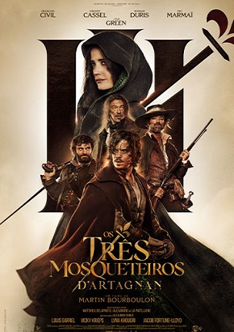

OS TRÊS MOSQUETEIROS: D'ARTAGNAN

EM BREVE
SINOPSE
D'Artagnan, um jovem gascão espirituoso, é deixado para morrer depois de tentar salvar uma jovem do sequestro. Ao chegar a Paris, ele tenta por todos os meios encontrar seus agressores. Ele não sabe que sua busca o levará ao centro de uma guerra real onde o futuro da França está em jogo. Aliado a Athos, Porthos e Aramis, três mosqueteiros do Rei com uma temeridade perigosa, D'Artagnan enfrenta as maquinações sombrias do Cardeal de Richelieu. Mas é quando se apaixona perdidamente por Constance Bonacieux, a confidente da Rainha, que d'Artagnan se coloca verdadeiramente em perigo. Pois é essa paixão que o leva ao rastro daquela que se torna sua inimiga mortal: Milady de Winter.
ELENCO
Eva Green, François Civil, Vincent Cassel, Jacob Fortune-Lloyd, Louis Garrel, Lyna Khoudri, Pio Marmaï, Ralph Amoussou, Vicky Krieps
DURAÇÃO
125 MIN
GENÊRO
Aventura
DISTRIBUIDORA
Paris Filmes